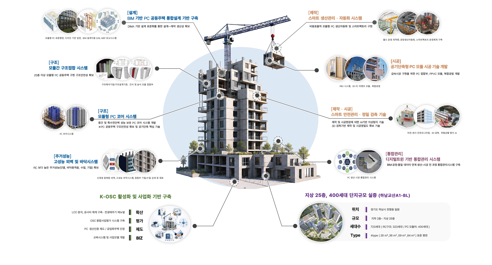

홈 · 연구단소개 · 연구목표
MISSION
건축물을 공장에서 사전제작하는 OSC(Off-Site Construction) 공법을 통해 건설산업이 직면하고 있는
숙련 인력의 고령화 및 품질 저하, 건설현장의 높은 사고 위험, 건설부문의 낮은 생산성 등 문제를 해결하고,
공공주택의 신속공급을 위한 솔루션을 개발하고자 합니다.
“PC 공동주택의 고효율 대량공급을 위한 고성능, 고층화(25층 이상), 표준화 핵심기술 개발 및 단지규모 실증”을
사업목표로 수립하고, 설계·제작·시공단계별 핵심요소기술 개발과 함께 PC 공동주택 실증을 통한 기술검증,
그리고 K-OSC 활성화 기반을 구축하겠습니다.
OVERVIEW
CORE TECHNOLOGIES
DfMA 기반 설계 표준화를 통한 설계~제작 생산성 확보
25층 이상 모듈형 PC 공동주택 구현 구조안전성 확보
중간 및 특수전단벽 성능 보유 PC 코어 시스템 개발
RC 대비 동등 이상 수준의 주거성능(단열·바닥충격음·수밀·기밀) 확보 목표
비용효율적 모듈형 PC 생산자동화 및 스마트팩토리 구현
급속시공 구현을 위한 PC 접합부, PPVC 모듈, 복합공법 개발
AI기반 이상탐지, 3D 검측 기반 제작 및 시공정밀도 확보 기술
BIM-공정·품질 데이터 연계 생산~시공 전 과정 통합관리
확산 · 평가 · 제도 · BIZ 4대 축의 산업 활성화 기반 구축
DEMONSTRATION
